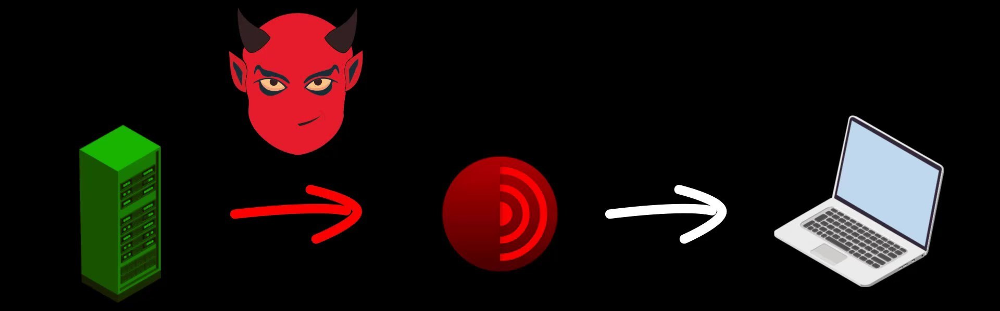
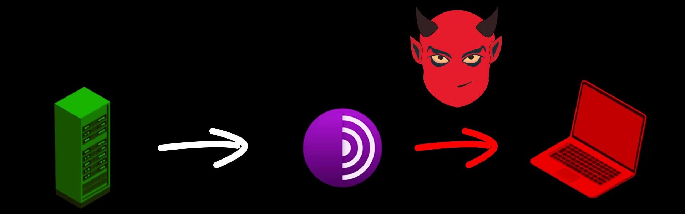
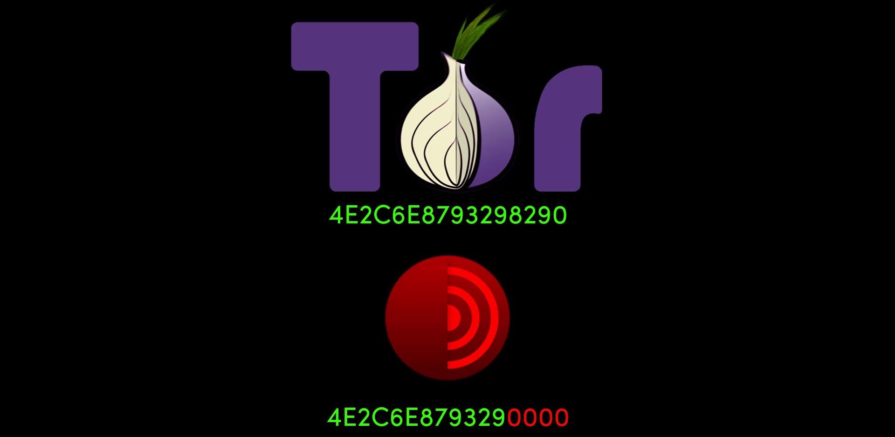

Verifying the Installation File
Regardless of where you downloaded the installation files, the contents of the installation files may have been changed by the attackers before or during the download process.
For example, a file you downloaded from the Tor project's website may have been replaced by a malicious version by the attackers.

Although such a possibility seems unlikely to many, I would like to remind you that in 2016, Linux Mint servers were hacked and installation image files were replaced with malicious files, and many people downloaded and installed malicious versions of Mint. You can browse for the source .
In addition, even if the direct download source is not hacked, at any time during your download process, the file may have been changed with the malicious version by the attackers who control your internet connection.

The surest solution to this and similar scenarios is to verify the downloaded file.
For verification, you need to compare the digital signature published by the developers of the Tor project with the signature of your current installation file.
Digital signatures are unique signatures only assigned by developers to the respective version of the program. Since even the slightest change in the content of the installation file will cause this signature to change, you can easily test whether the file has been changed or not through the signature.

When you downloaded the setup file, remember I mentioned that you need to download signature files with ".asc" extension in addition to the setup file. These " .asc " file are actually signature file created with the PGP encryption protocol. This file contain a uniquely generated key. Thanks to this file, we can test whether the content of the program has been changed or not. If you haven't downloaded this signature file, go to the download source and download the signature file of the Tor Browser version you downloaded. To avoid problems during the verification phase, make sure you download the signature file of the exact tor browser version you downloaded earlier. Otherwise, the verification will fail.
Don't worry if the terms I use seem unfamiliar and incomprehensible to you. When you come to the "Encryption" section in the rest of the course, i will be talking more about this terms separately. For now, you only need to focus on verification process. When this process is quite simple, you shouldn't have any problems if you follow the guide carefully.
After obtaining the setup file and signature file, you need to use a separate tool to test the setup file. Although this tool differs according to the operating system used, the functions and uses of them are basically the same.
For example, we will use the Gpg4win tool to verify the signature on Windows . On MacOS , we will verify the signature with the tool called GPG Suite . Finally, we will test signature on Linux using a verification tool that is already installed .
We will be handling the verification and setup processes one by one specifically for the operating system. So you can directly throw the verification and installation video for the operating system you are not using. We will already be discussing how you can implement the same process in each of them on the current operating system.
Without further ado, let's start by discussing how you can verify and install the Tor Browser installation file on the "Windows" system.